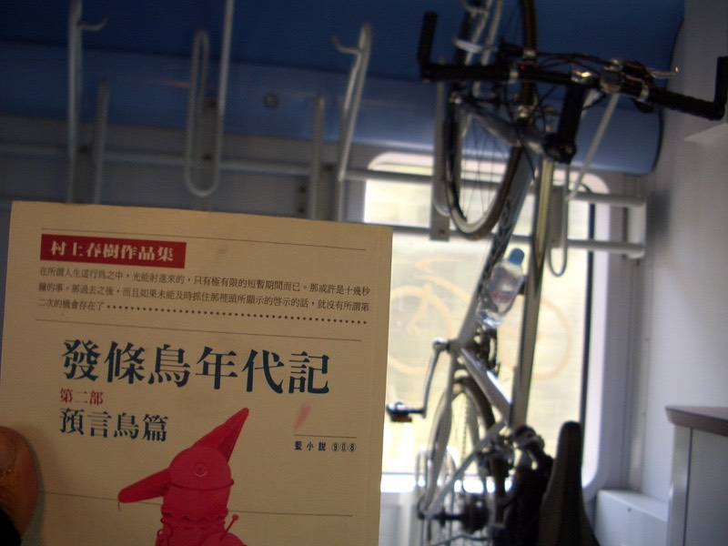
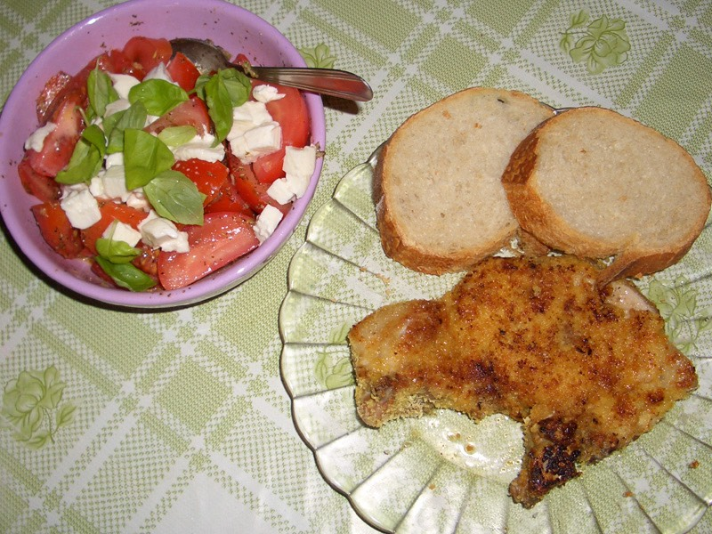
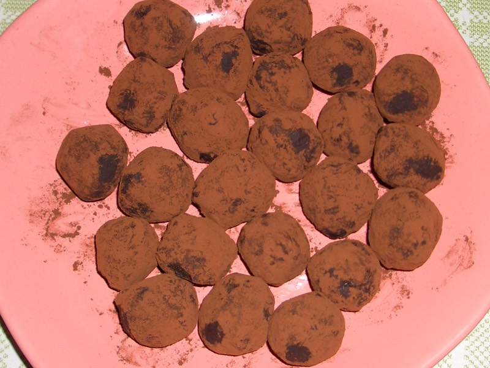

發條鳥年代記，第一次看第一集是在念二技的時候，在圖書館隨手翻了翻便睡午覺。
認真的看完它，則是在當兵時，在軍營裡附設的圖書館借來，利用上夜哨的時間看完。
這大約是距今五個多月以前的事情，由於那陣子看了大量的書籍（尤其是村上的），
很多的人物劇情都混在一起成為大長篇，但由於這本書的故事很有趣，所以劇情還記得很清楚。
雖然是相當有意思的書，分為三部曲，卻也沒那麼急著想找出第二、三集看完它。
第二集出現時，人居然在法國，完全意想不到的地方，繼續這故事的延續。
整體來說，仍是很好看的書，與其佩服村上寫作的功力，賴明珠小姐翻譯的技巧和文筆也是無比的優異。
在高速疾駛的火車上，配合規律的震動和火車切割空氣的聲音，
不規則的陽光透過窗戶照在書頁上，讓白紙黑字的書多了幾分色彩，
隨著故事情節進入村上獨特的世界裡，在什麼地方看他的書，似乎都會到達同樣的空間。
那樣的深沈而寫實，無法想像卻又清晰無比，闔上書，下午六點，火車依舊飛馳著。
陽光撒進來的角度傾斜了許多，不放心腳踏車孤零零的掛在車假上輕晃著。
便放棄稍微舒服一點的座位，一路上都待在單車停放處，是我陪它還是它陪我呢？

一個人的孤獨是一回事，在異鄉的孤獨，又是另外一回事。
就好比，決定減肥是一回事，被丟到集中營裡餓的皮包骨卻連滴水都沒的喝，也是另外一回事。
想到這趟旅行已經延伸的太招搖時，已經來不及跟大家說『謝謝收看』。
變質是件很不舒服的事情，我為什麼來法國騎腳踏車？是沒有目的的。
花兩個月，花十二萬，這只是個旅行而已，不僅不奢望得到些什麼，反而想試著拋棄些什麼。
或許目前為止的做法都是與反方向所進行的，人生沒地圖可以看，就算有，也不屑參考。
旅行總會到達一個終點，環法的『環』，不論走了多遠，起點即是終點，所以哪裡也沒去，什麼也沒改變。
那麼，陽光般的環法連載，明天繼續播映。請當成童話故事來看，比較開心。
晚餐是在夢裡吃到的。
巴西里香草大蒜番茄乳酪橄欖油醋沙拉
法國麵包配沾蛋裹著麵衣炸的香酥的豬排

自製巧克力牛奶蛋黃可可粉類松露巧克力

滿到表面張力邊緣的香濃熱奶茶
可以自己學點煮菜技巧的話，是比會算二元一次聯立方程式還要受用無窮的。